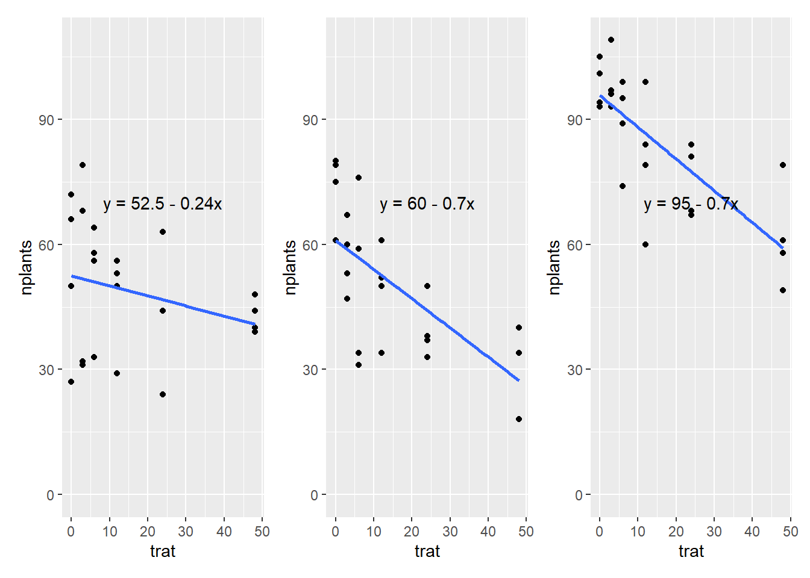

library(readxl)
library(tidyverse)
library(ggplot2)
estande <- read_excel("dados-diversos.xlsx", "estande")
estande |>
ggplot(aes(trat, nplants))+
geom_point()+
facet_wrap(~exp)+
ylim(0,max(estande$nplants))+
geom_smooth(se = F, method= "lm")#para a colocar a linha e lm para deixar em padrão linear.Anova para fatores categóricos
Anova faz para fatores categóricos (qualitativos)
Quando os fatores do tratamento é quantitativo nós fazemos análise de regressão.
coeficiente angular: da linha do gráfico da regressão.
a pergunta: a uma tendencia em declinar ou aumentar?
queremos saber se a linha é diferente do angulo zero, que seria reta.
Geom_smooth coloca a linha.
3
exp1 <- estande |>
filter(exp == 1)
m1 <- lm(nplants ~ trat, data = exp1)#nplants é a resposta em função do trat
summary(m1)
Call:
lm(formula = nplants ~ trat, data = exp1)
Residuals:
Min 1Q Median 3Q Max
-25.500 -6.532 1.758 8.573 27.226
Coefficients:
Estimate Std. Error t value Pr(>|t|)
(Intercept) 52.5000 4.2044 12.487 1.84e-11 ***
trat -0.2419 0.1859 -1.301 0.207
---
Signif. codes: 0 '***' 0.001 '**' 0.01 '*' 0.05 '.' 0.1 ' ' 1
Residual standard error: 15 on 22 degrees of freedom
Multiple R-squared: 0.07148, Adjusted R-squared: 0.02928
F-statistic: 1.694 on 1 and 22 DF, p-value: 0.2066exp2 <- estande |>
filter(exp == 2)
m2 <- lm(nplants ~ trat, data = exp2)#nplants é a resposta em função do trat
summary(m2)
Call:
lm(formula = nplants ~ trat, data = exp2)
Residuals:
Min 1Q Median 3Q Max
-25.7816 -7.7150 0.5653 8.1929 19.2184
Coefficients:
Estimate Std. Error t value Pr(>|t|)
(Intercept) 60.9857 3.6304 16.798 4.93e-14 ***
trat -0.7007 0.1605 -4.365 0.000247 ***
---
Signif. codes: 0 '***' 0.001 '**' 0.01 '*' 0.05 '.' 0.1 ' ' 1
Residual standard error: 12.95 on 22 degrees of freedom
Multiple R-squared: 0.4641, Adjusted R-squared: 0.4398
F-statistic: 19.05 on 1 and 22 DF, p-value: 0.0002473exp3 <- estande |>
filter(exp == 3)
m3 <- lm(nplants ~ trat, data = exp3)#nplants é a resposta em função do trat
summary(m3)
Call:
lm(formula = nplants ~ trat, data = exp3)
Residuals:
Min 1Q Median 3Q Max
-26.5887 -3.9597 0.7177 5.5806 19.8952
Coefficients:
Estimate Std. Error t value Pr(>|t|)
(Intercept) 95.7500 2.9529 32.425 < 2e-16 ***
trat -0.7634 0.1306 -5.847 6.97e-06 ***
---
Signif. codes: 0 '***' 0.001 '**' 0.01 '*' 0.05 '.' 0.1 ' ' 1
Residual standard error: 10.53 on 22 degrees of freedom
Multiple R-squared: 0.6085, Adjusted R-squared: 0.5907
F-statistic: 34.19 on 1 and 22 DF, p-value: 6.968e-06library(report)
report(m3)We fitted a linear model (estimated using OLS) to predict nplants with trat
(formula: nplants ~ trat). The model explains a statistically significant and
substantial proportion of variance (R2 = 0.61, F(1, 22) = 34.19, p < .001, adj.
R2 = 0.59). The model's intercept, corresponding to trat = 0, is at 95.75 (95%
CI [89.63, 101.87], t(22) = 32.43, p < .001). Within this model:
- The effect of trat is statistically significant and negative (beta = -0.76,
95% CI [-1.03, -0.49], t(22) = -5.85, p < .001; Std. beta = -0.78, 95% CI
[-1.06, -0.50])
Standardized parameters were obtained by fitting the model on a standardized
version of the dataset. 95% Confidence Intervals (CIs) and p-values were
computed using a Wald t-distribution approximation.g1 <- exp1 |>
ggplot(aes(trat, nplants))+
geom_point()+
ylim(0, max(estande$nplants))+
geom_smooth(method = "lm", se = F)+
annotate(geom = "text", x = 24, y= 70, label = "y = 52.5 - 0.24x")
g2 <- exp2 |>
ggplot(aes(trat, nplants))+
geom_point()+
ylim(0, max(estande$nplants))+
geom_smooth(method = "lm", se = F)+
annotate(geom = "text", x = 24, y= 70, label = "y = 60 - 0.7x")
g3 <- exp3 |>
ggplot(aes(trat, nplants))+
geom_point()+
ylim(0, max(estande$nplants))+
geom_smooth(method = "lm", se = F)+
annotate(geom = "text", x = 24, y= 70, label = "y = 95 - 0.7x")
library(patchwork)
g1 | g2 | g3
Os dois métodos são certos, você pode usar uma abordagem ou outra.
No segundo método o experimento é considerado um fator aleatório. e considera o valor dos 3 experimentos juntos. Porém é mais recomendado quando tem mais repetições, 3 é pouco.
library(lme4)#modelo misto porque tem fator fixo e aleatório, no outro regressão só tem fixo, o experimento é o componente aleatório. Vai juntar os 3 experimentos em um modelo só.
mix <- lmer(nplants ~ trat + (trat |exp),
data = estande)
summary(mix)Linear mixed model fit by REML ['lmerMod']
Formula: nplants ~ trat + (trat | exp)
Data: estande
REML criterion at convergence: 580.8
Scaled residuals:
Min 1Q Median 3Q Max
-2.0988 -0.6091 0.1722 0.6360 1.9963
Random effects:
Groups Name Variance Std.Dev. Corr
exp (Intercept) 510.68405 22.5983
trat 0.05516 0.2349 -0.82
Residual 167.91303 12.9581
Number of obs: 72, groups: exp, 3
Fixed effects:
Estimate Std. Error t value
(Intercept) 69.7452 13.2146 5.278
trat -0.5687 0.1643 -3.462
Correlation of Fixed Effects:
(Intr)
trat -0.731
optimizer (nloptwrap) convergence code: 0 (OK)
Model failed to converge with max|grad| = 0.00274249 (tol = 0.002, component 1)library(car)
Anova(mix)#aqui da o P-valor, calcula a média do slop dos 3.Analysis of Deviance Table (Type II Wald chisquare tests)
Response: nplants
Chisq Df Pr(>Chisq)
trat 11.985 1 0.0005362 ***
---
Signif. codes: 0 '***' 0.001 '**' 0.01 '*' 0.05 '.' 0.1 ' ' 1modelo glm
modelo linear é um caso especial de glm, que é a familia gaussian.
nplantas= numerica discreta, usa familia poisson
numerica continua = familia gaussian
Fizemos o ajusto modelo aos dados.
glm1 <- glm(nplants ~ trat, family = "gaussian",
data=exp3)
summary(glm1)
Call:
glm(formula = nplants ~ trat, family = "gaussian", data = exp3)
Deviance Residuals:
Min 1Q Median 3Q Max
-26.5887 -3.9597 0.7177 5.5806 19.8952
Coefficients:
Estimate Std. Error t value Pr(>|t|)
(Intercept) 95.7500 2.9529 32.425 < 2e-16 ***
trat -0.7634 0.1306 -5.847 6.97e-06 ***
---
Signif. codes: 0 '***' 0.001 '**' 0.01 '*' 0.05 '.' 0.1 ' ' 1
(Dispersion parameter for gaussian family taken to be 110.9787)
Null deviance: 6235.8 on 23 degrees of freedom
Residual deviance: 2441.5 on 22 degrees of freedom
AIC: 185.04
Number of Fisher Scoring iterations: 2glm2 <- glm(nplants ~ trat, family = poisson(link = "log"),
data=exp3)
AIC(glm1) # quanto menor o aic melhor o modelo[1] 185.0449AIC(glm2) # esse modelo deu melhor porque deu menor.[1] 183.9324summary(glm2)
Call:
glm(formula = nplants ~ trat, family = poisson(link = "log"),
data = exp3)
Deviance Residuals:
Min 1Q Median 3Q Max
-2.94600 -0.46988 0.02453 0.61868 2.34657
Coefficients:
Estimate Std. Error z value Pr(>|z|)
(Intercept) 4.571590 0.029539 154.762 < 2e-16 ***
trat -0.009965 0.001488 -6.697 2.13e-11 ***
---
Signif. codes: 0 '***' 0.001 '**' 0.01 '*' 0.05 '.' 0.1 ' ' 1
(Dispersion parameter for poisson family taken to be 1)
Null deviance: 77.906 on 23 degrees of freedom
Residual deviance: 29.952 on 22 degrees of freedom
AIC: 183.93
Number of Fisher Scoring iterations: 4